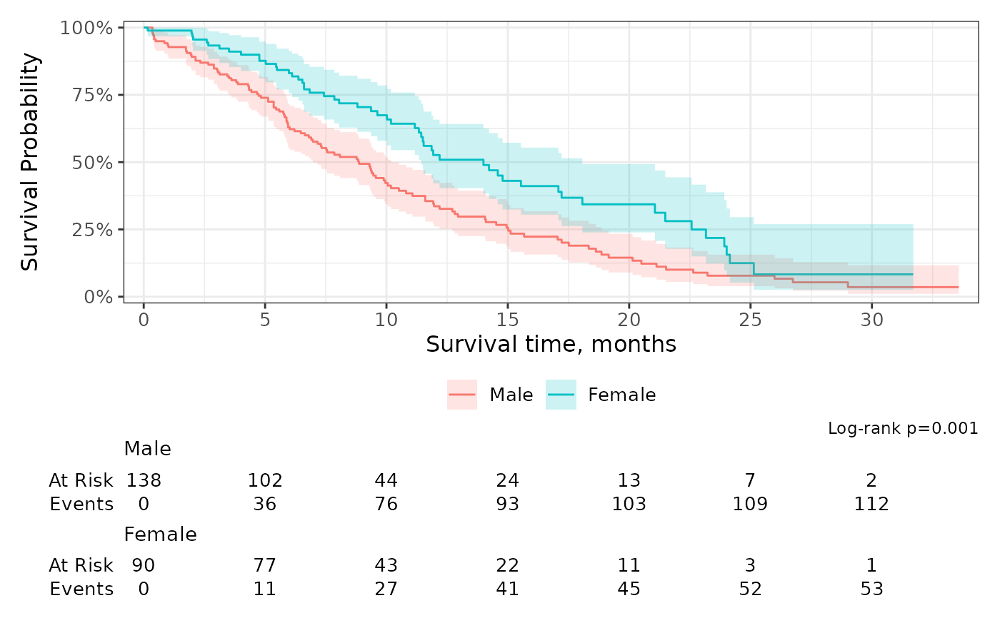
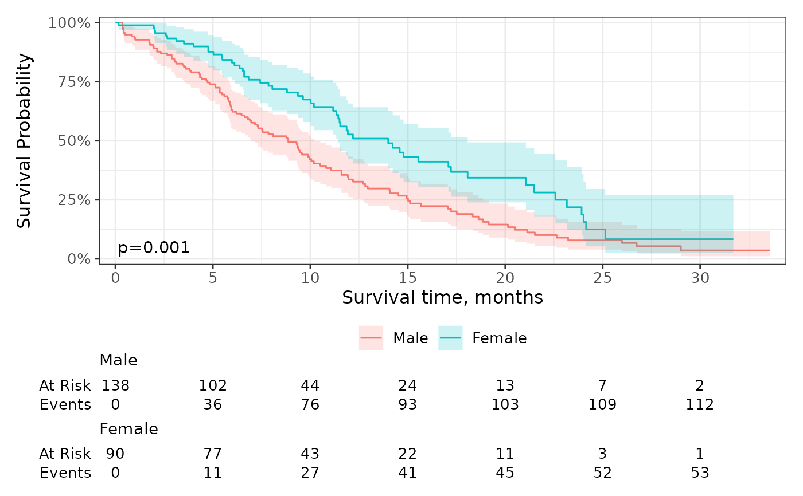

The function survfit2_p() wraps survival::survdiff() and returns
a formatted p-value.
Examples
sf <- survfit2(Surv(time, status) ~ sex, data = df_lung)
sf %>%
ggsurvfit() +
add_confidence_interval() +
add_risktable() +
scale_ggsurvfit() +
labs(caption = glue::glue("Log-rank {survfit2_p(sf)}"))

sf %>%
ggsurvfit() +
add_confidence_interval() +
add_risktable() +
scale_ggsurvfit() +
annotate("text", x = 2, y = 0.05, label = glue::glue("{survfit2_p(sf)}"))
